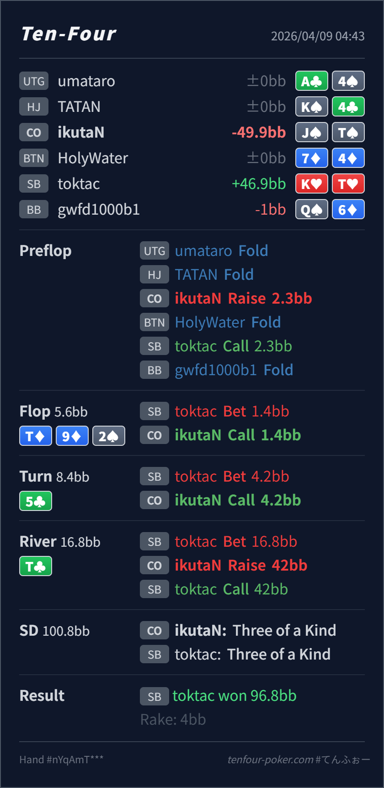

Preflop
良いJ♠T♠ は CO open として自然で、SB から action が返っても問題ありません。
主論点は、SB flat 後の T♦ 9♦ 2♠ / 5♣ / T♣ で、SB の donk → barrel → pot lead にどんなレンジが残り、そのレンジに対して J♠T♠ を river で call bucket と raise bucket のどちらに置くかです。結論は、preflop の open、flop / turn の call はかなり自然で、いちばん見直すなら river raise です。J♠T♠ は river でかなり強い call 候補ですが、raise はやや薄すぎます。
J♠T♠K♥T♥T♦ 9♦ 2♠ / 5♣ / T♣Tx, full house, missed diamond draw が共存します。J♠T♠ は T を持つことで value 側の Tx を減らし、diamond bluff をしっかり unblock するので、まず強い call bucket に入ります。KTx/QTx/ATx や full house に寄りやすいです。raise に回すなら、より強い trips か boat が先です。J♠T♠K♥T♥2.3BB, SB callT♦ 9♦ 2♠ / 5♣ / T♣1.4BB, CO call4.2BB, CO call16.8BB, CO raise 42BB, SB callT with J kicker, Villain trips T with K kicker
良いJ♠T♠ は CO open として自然で、SB から action が返っても問題ありません。
T♦ 9♦ 2♠良いJ♠T♠ はそのレンジに対して top pair good kicker で、raise より call に置きやすい hand です。
5♣良いJ♠T♠ は依然として上位の continue で、IP のまま river を見る価値が高いです。
T♣やや薄すぎるJ♠T♠ は T を持って value を block し、diamond bluff を unblock するので、まずは強い call bucket です。
| 論点 | その場で起きがちな見え方 | どこがズレたか | 次回の基準 |
|---|---|---|---|
river の J♠T♠ raise | board が paired して trips になったので、pot lead に対して大きく取り返したくなる | J♠T♠ はかなり強いですが、SB の pot lead に対しては まず call で bluff を残す hand です。raise にすると missed diamond が全部消え、続行するのは より強い Tx と boat が中心になります。 | paired river で trips を持ったら、相手の bluff を残したい hand か / worse value が本当に raise-call するか を先に確認する |
| river pot lead の見え方 | T を持っているので相手の trips はかなり減っており、raise しても value が通りそうに見える | T を持つこと自体は call を後押ししますが、raise を後押しするとは限りません。T を持つことで value を減らせても、worse hands の call 量までは増えないため、raise の取り分は伸びにくいです。 | strong blocker は raise しやすい ではなく、call しやすい に働くことも多いと整理する |
| ストリート | その時点の見え方 | 判断の軸 | 評価 | コメント |
|---|---|---|---|---|
| Preflop | SB の flat range には suited broadway, suited connector, medium pair, suited Tx がかなり含まれます。 | J♠T♠ は CO open として自然で、SB から action が返っても問題ありません。 | 良い | ここは問題ありません。 |
Flop T♦ 9♦ 2♠ | SB の small donk には Tx, 9x, diamond draw, J8/QJ/KQ 系が広く含まれます。 | J♠T♠ はそのレンジに対して top pair good kicker で、raise より call に置きやすい hand です。 | 良い | 小さい donk に対して素直に call で十分です。 |
Turn 5♣ | SB の half-pot barrel で、Tx, 強い draw, 一部 pressure bluff がまだ厚く残ります。 | J♠T♠ は依然として上位の continue で、IP のまま river を見る価値が高いです。 | 良い | ここも raise を急がず call に置けていて自然です。 |
River T♣ | SB の pot lead は heart の Tx, boat, missed diamond draw にかなり分かれます。 | J♠T♠ は T を持って value を block し、diamond bluff を unblock するので、まずは強い call bucket です。 | やや薄すぎる | raise の発想は分かりますが、レンジに対しては call の方がきれいです。 |
どの bucket に置くか が大事で、まずは call で bluff を残す発想が重要です。T を持って相手の value を block しているときは、raise より call のEVが上がる形もかなり多いです。worse hand が何 combo call するか を value 側から数えると薄い raise を減らせます。J♠T♠ のような unblock の良い trips は call がかなり機能しやすいです。KTx/QTx を pot lead-calling しがちな相手が多いと読めるなら raise も候補ですが、その場合でも JT はまだ少し下側です。